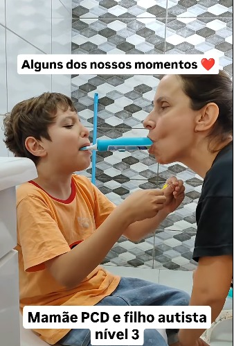
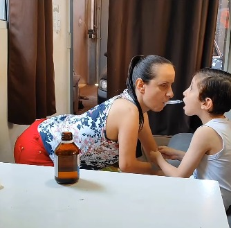

💔 Eles lutam todos os dias. Mas sozinhos, não conseguem mais. Ajude o Davi.
 117 corações recebidos ❤️
117 corações recebidos ❤️
O Davi é um menino especial, autista nível 3, que depende totalmente dos cuidados da sua mãe, Natalia Evelyn
A Natalia é pessoa com deficiência (PCD), tem os dois bracinhos atrofiados e, mesmo assim, luta todos os dias para dar o melhor ao filho. Ela faz artes e desenhos com a boca para tentar garantir uma renda, mas infelizmente isso não é suficiente. O pouco que recebem do governo mal dá para a alimentação básica, quem dirá para medicamentos, terapias e tratamentos que o Davi precisa para se desenvolver. E quem carrega essa luta nas costas é a mamãe, Natalia Evelyn — uma guerreira que nasceu com os dois braços atrofiados..
Mesmo com toda limitação física, ela se recusa a desistir. Ela desenha com a boca, faz artes, batalha como pode para garantir o mínimo dentro de casa. Mas a verdade é dura: o pouco que recebem do governo mal dá para comprar comida. Imagina conseDavir bancar medicamentos, consultas e terapias?.
Foi graças a uma primeira vaquinha que o Davi teve acesso a dois anos de tratamento e começou a usar o canabidiol. E os milagres começaram a acontecer: está cada vez mais difícil.
Antes, ele não conseDavia nem morder um pedaço de comida. Hoje, graças às terapias, ele já consegue se alimentar sozinho. Essas terapias mudaram a vida dele. E agora, sem ajuda, tudo isso pode parar. Com essa nova vaquinha, queremos garantir: Mais 3 meses de terapias (em outra cidade, o que também gera custos de transporte); O fornecimento mensal do canabidiol (2 vidros por mês), essencial para o desenvolvimento do Davi..
"Tenho tentado sobreviver com pequenos trabalhos como Pinturas e Desenhando os nomes, mas é muito pouco diante de tudo o que precisamos."
São essas perguntas que me fazem chorar escondida no banheiro toda noite.
Já pensei em desistir… a tristeza e a ansiedade têm sido companheiras constantes. Mas quando olho pro meu filho, lembro o porquê de estar aqui. Ele é minha motivação. Meu propósito. Eu nunca vou abandoná-lo..
Ser Mãe ja não é facil nos dias atuais ainda mais na nossa situação. Mas é o maior presente que já recebi na vida. O Davi me ensina sobre amor todos os dias — mesmo sem falar uma palavra.
Mas a verdade é que... a gente chegou num ponto crítico., Eu estou desempregada. As dívidas só aumentam. O aluguel está atrasado. Às vezes não temos nem o que comer. E as necessidades básicas do Davi — fraldas, leite especial, medicação, produtos de higiene — simplesmente não cabem no pouco que a gente recebe do governo..
Tento conseDavir algum dinheiro como caricaturista, fazendo desenhos em festas, eventos ou por encomenda. Mas é muito, muito pouco.
Mas aí eu olho pro Davi... e lembro porque estou aqui. Ele depende de mim. E eu prometi a mim mesmo que, enquanto eu estiver vivo, ele nunca vai ser abandonado. Nunca.
Já pensei em desistir várias vezes. Às vezes a tristeza vem com tanta força que eu me pergunto se vou aguentar. Mas aí eu olho pro Davi... e lembro porque estou aqui. Ele depende de mim. E eu prometi a mim mesmo que, enquanto eu estiver vivo, ele nunca vai ser abandonado. Nunca.

É a mesma tecnologia usada por cirurgiões pra operar à distância, adaptada para devolver a independência a crianças como o Davi.
Se você está lendo isso agora, eu te peço com o coração aberto: nos ajude. Assista nosso vídeo. Veja com seus próprios olhos quem é o Davi, quem somos nós. E se puder doar qualquer valor, saiba que estará ajudando dois filhos a continuar lutando juntos — com dignidade, com carinho, com esperança. Você pode ser a diferença entre a dor e o alívio. Entre o desespero e a esperança.
Você receberá:
● Atualizações semanais da nossa jornada
● Vídeo do primeiro abraço dele com a prótese
● Seu nome na nossa lista de anjos (se desejar)
Compartilhe nossa história. Cada compartilhamento é uma nova chance de devolver a infância ao meu filho.
Que Deus abençoe você e a sua família.
Att: Natalia Evelyn, Mãe do Davi.